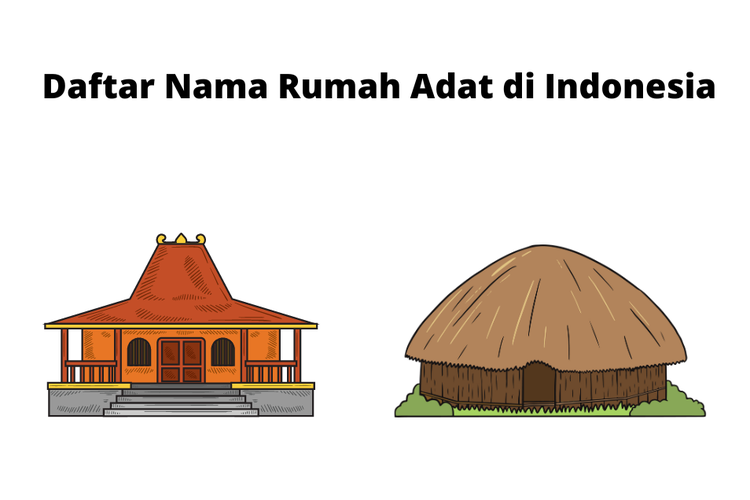

Keberagaman Budaya Bangsa dan Negara Indonesia
.jpg)
Keberagaman budaya Indonesia memiliki kekayaan warisan budaya yang melimpah. Wilayah yang meliputi banyak pulau dari Sabang hingga Merauke menciptakan keragaman budaya yang berasal dari berbagai suku bangsa. Berdasarkan sensus Badan Pusat Statistik pada tahun 2010, terdapat lebih dari 300 kelompok etnis atau 1.340 kelompok suku bangsa yang ada di Indonesia.
Keragaman ini menjadi inspirasi dari semboyan Bhineka Tunggal Ika, yang berarti meskipun berbeda-beda namun tetap satu. Walaupun terdapat berbagai macam suku, budaya, agama, dan golongan, namun Indonesia tetap bersatu sebagai satu kesatuan. Semboyan tersebut menegaskan bahwa keberagaman yang ada di negara kita merupakan sebuah kekayaan dan keindahan yang unik, yang tidak dimiliki oleh negara lain.
Daftar Isi :
- Pengertian Keberagaman Budaya
- Keberagaman Budaya Bangsa dan Negara Indonesia
- Keberagaman Budaya Rumah Adat Tradisional
- Keberagaman Budaya Upacara Adat
- Keberagaman Budaya Pakaian Adat Tradisional
- Keberagaman Budaya Tarian Adat Tradisional
- Keberagaman Budaya Senjata Tradisional
- Keberagaman Budaya Alat Musik dan Lagu Tradisional
- Keberagaman Budaya Makanan Khas
- Kesimpulan
Keberagaman Budaya Indonesia
-
Pengertian Keberagaman Budaya
Keberagaman budaya adalah salah satu ciri khas yang ada di dunia, dengan berbagai suku bangsa yang tersebar di seluruh dunia, termasuk di Indonesia. Sebagai warga negara Indonesia, kita tidak bisa mengabaikan fakta bahwa negara Indonesia memiliki keragaman yang sangat besar, dari ras, suku bangsa, hingga bahasa.
Keragaman ini telah melahirkan budaya Indonesia yang sangat kaya dan unik, seperti rumah adat, upacara adat, pakaian adat tradisional, tarian adat tradisional, alat musik dan lagu tradisional, senjata tradisional, dan berbagai makanan khas.
Keragaman budaya Indonesia berasal dari kebudayaan lokal yang terus tumbuh dan berkembang di masyarakat. Pengaruh dari berbagai kebudayaan tampak jelas dan berdampak pada masyarakat sehingga menciptakan kebudayaan itu sendiri.
Seiring berjalannya waktu, perkembangan kebudayaan memiliki peran dan fungsi untuk meningkatkan semangat nasionalis. Hal ini disebabkan karena budaya lokal membawa nilai-nilai sosial yang perlu diterapkan oleh masyarakat Indonesia secara luas.
-
Keberagaman Budaya Bangsa dan Negara Indonesia
Berikut ini merupakan keberagaman budaya yang ada pada bangsa dan negara Indonesia:
- Rumah adat aceh
- Rumah Adat Bolon Sumatera Utara
- Rumah Adat Gadang Sumatera Barat
- Rumah Adat Melayu Selaso Jatuh Kembar Kepulauan Riau dan Riau
- Rumah Adat Panggung Jambi
- Rumah Adat Bubungan Lima Bengkulu
- Rumah Adat Limas Sumatera Selatan
- Upacara adat besale Jambi
- Upacara adat Perang ketupat Kepulauan Bangka Belitung
- Upacara adat Bakar gunung api Bengkulu
- Upacara adat Ngebabali Lampung
- Upacara adat Sisingaan dari Jawa Barat, Jawa Timur dan Jawa Tengah
- Upacara adat Seren Raun dari Banten, Yogyakarta, dan Bali
- Pakaian Adat Kebaya Labuh dan Teluk Belanga Kepulauan Riau
- Pakaian Adat Bundo Kanduang, Limpapeh Rumah Nan Gadang Sumatera Barat
- Pakaian Adat Aesan Gede Sumatera Selatan
- Pakaian Adat Paksian Bangka Belitung
- Pakaian Adat King Baba atau King Tompang Kalimantan Barat
- Pakaian Adat Manteren Lamo dan Kimun Gia Maluku Utara
- Keris berasal dari Jawa
- Kawali atau Badik dari Sulawesi
- Mandau dari Kalimantan
- Celurit dari Madura (Jawa Timur)
- Parang Salawaku dari Maluku
- Alat musik Angklung dari Jawab Barat
- Alat musik Gamelan dari Jawa, Sunda, Bali, dan Lombok
- Alat musik Tifa dari Maluku dan Papua
- Alat musik Kolintang dari Sulawesi Utara
- Makanan Khas Sumatera
- Rendang (Padang, Sumatera Barat)
- Sate Padang (Sumatera Barat)
- Pempek (Palembang, Sumatera Selatan)
- Tekwan (Palembang, Sumatera Selatan)
- Bika Ambon (Medan, Sumatera Utara)
- Makanan Khas Jawa
- Lontong Balap (Jawa Timur)
- Gudeg (Yogyakarta) Cenil (Yogyakarta)
- Nasi Timbel (Jawa Barat)
- Asinan Betawi (Jakarta)
- Soto Kudus (Jawa Tengah)
- Makanan Khas Bali
- Makanan Khas Kalimantan
- Soto Banjar (Kalimantan Selatan)
- Ikan Patin Baubar (Kalimantan Selatan)
- Ikan Asin Richa (Kalimantan Utara)
- Asam Pedas Tempoyak (Kalimantan Barat)
- Ikan Jelawat (Kalimantan Tengah)
- Makanan Khas Papua
Rumah adat tradisional merupakan sebuah bangunan atau konstruksi yang dibangun dan dirancang dengan cara yang sama dari generasi ke generasi tanpa perubahan yang signifikan. Meskipun telah lama berdiri, rumah adat masih dipertahankan hingga saat ini dengan segala kegunaan, fungsi sosial, dan nilai budaya yang terkandung di dalam desain dan corak bangunannya. Di setiap daerah, rumah adat memiliki nama yang berbeda.
Contoh keberagaman rumah adat tradisional:
 Upacara adat merupakan salah satu bentuk kebiasaan atau adat istiadat dari masyarakat tradisional yang masih memiliki nilai-nilai yang relevan bagi kehidupan dan kebutuhan mereka. Upacara adat dianggap sebagai warisan nenek moyang yang dijaga dan dilestarikan secara turun-temurun di setiap daerah. Walaupun zaman semakin modern, sebagian masyarakat tidak melupakan upacara adat karena memiliki nilai filosofis dan kekuatan yang kuat bagi mereka.
Contoh keberagaman upacara adat:
Pakaian adat tradisional adalah salah satu simbol identitas dari suatu suku. Cara utama untuk mengenali suatu suku adalah dengan melihat pakaian tradisional adatnya, selain melihat dari bentuk rumah adatnya. Biasanya, pakaian adat dipakai ketika upacara adat sedang berlangsung.
Namun, seiring dengan perkembangan zaman, pakaian adat telah menjadi tren dalam dunia fashion. Banyak orang yang memodifikasi pakaian adat agar terlihat modern dan fashionable, sehingga dapat dipakai pada acara informal dan dipadukan dengan pakaian modern.
Contoh keberagaman pakaian adat tradisional:
Tarian adat sering diadakan sebagai bagian dari serangkaian upacara adat. Tarian adat tradisional biasanya memiliki ciri khas yang merefleksikan budaya dan kearifan lokal. Tarian adat tradisional menjadi salah satu contoh dari keragaman budaya Indonesia yang terkenal dan sering dipertunjukkan pada acara penting di tingkat internasional.
Senjata tradisional adalah hasil dari kebudayaan suatu masyarakat yang erat kaitannya dengan wilayah setempat. Senjata tradisional berfungsi untuk melindungi dari serangan musuh, serta dalam aktivitas berburu dan bertani. Seiring berjalannya waktu, senjata tradisional menjadi simbol identitas suatu bangsa dan menjadi aset kebudayaan Indonesia.
Setiap provinsi di Indonesia memiliki senjata tradisional yang berbeda, memiliki nilai dan aturan yang sejalan dengan norma budaya setempat.
Contoh keberagaman senjata tradisional:
Indonesia memiliki beragam alat musik tradisional yang khas dan unik. Beberapa di antaranya telah dikenal hingga ke ranah internasional. Bagi masyarakat adat, alat musik tradisional memiliki tiga fungsi utama, yaitu sebagai media atau sarana dalam upacara adat, sebagai pengisi latar musik pada pertunjukan seni, dan sebagai sarana ekspresi, kreativitas, bahkan komunikasi.
Contoh keberagaman alat musik dan lagu tradisional:
Sebagai negara kepulauan dengan tanahnya yang subur dan dapat menumbuhkan berbagai jenis tanaman, Indonesia menjadi kaya akan rempah-rempah. Hal ini memungkinkan Indonesia untuk menciptakan makanan khas dengan cita rasa rempah-rempah yang khas dan melekat pada setiap hidangannya. Oleh karena itu, Indonesia menjadi salah satu negara dengan wisata kuliner yang sangat dihargai oleh masyarakat internasional.
Beberapa makanan khas daerah di Indonesia yang cukup terkenal, antara lain:
Bebek Betutu, Nasi Jinggo, Sate Lilit, Sate Pentul, Bebek Bengil, Ayam Betutu, Rujak Buleleng, Siobak Khe Lok, Nasi Campur Bali, Ikan Asap, Sambal Matah, Rujak Kuah Pindang.
Papeda, Kue Lontar, Ikan Bakar Manokwari, Sagu Lempeng, Ikan Bungkus, Udang Selingkuh, Kue Bagea, Sambal Colo-Colo.
-
Kesimpulan
Keberagaman budaya di Indonesia berasal dari berbagai kebudayaan lokal yang terus berkembang akibat pengaruh yang tampak dan merekah di masyarakat. Hal ini menciptakan kebudayaan yang unik dan kaya. Dalam perkembangannya, kebudayaan memainkan peran penting dalam meningkatkan semangat nasionalis dengan memuat nilai-nilai sosial yang diterapkan oleh masyarakat Indonesia.
Meskipun demikian, dengan semakin globalnya informasi, budaya Indonesia semakin tersebar di luar negeri. Beberapa negara telah mengenal budaya asli Indonesia dan tertarik untuk mempelajarinya. Hal ini terjadi berkat semangat nasionalis para generasi muda Indonesia yang tidak hanya mempertahankan budaya lokal, tetapi juga menyebarkannya ke luar negeri.